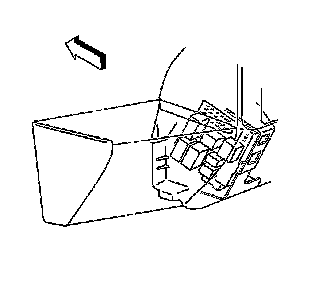
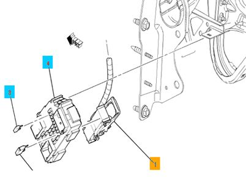
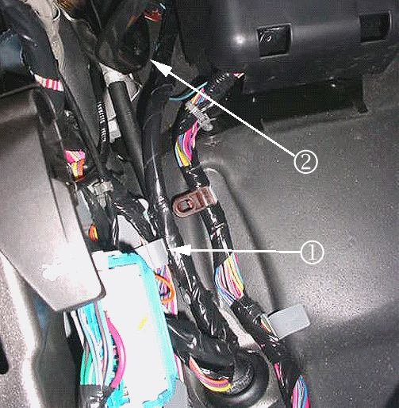
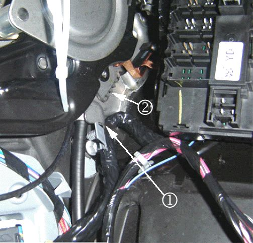
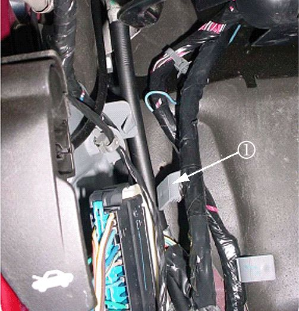
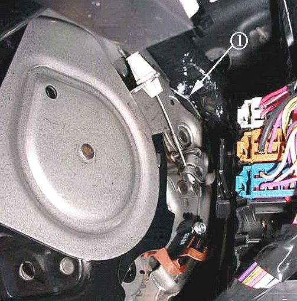
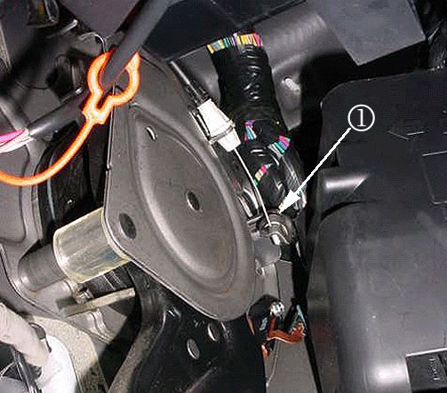
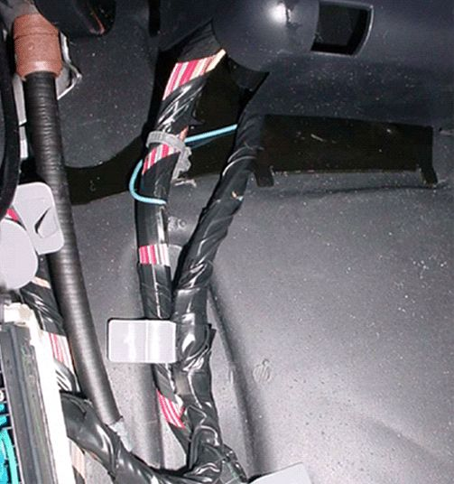

Part 2
Inspection of Fuse Block - I/P (Left Side) for Loose Connector X11. Turn OFF the ignition and all accessories.
2. Disconnect the negative battery cable. Refer to Battery Disconnect Caution and Battery Negative Cable Disconnection and Connection in SI.

3. Remove the left side fuse block as shown.

4. Inspect connector X1 (1) on the back of the fuse block for a loose connection. Secure the connector as needed.
5. Install the left side fuse block.
6. Connect the negative battery cable. Refer to Battery Negative Cable Disconnection and Connection in SI.
7. Clear any DTCs that may be present with a scan tool and verify the proper operation of the vehicle.
Chafed IP Wiring Harness Near Park Brake Pedal Assembly
The above condition may cause one or more of the following fuses to open:
- 60A - MBEC1 (#72) (Underhood)
- 30A - AMP (#40) (Underhood)
- 15A - RDO (#41) (Underhood)
- 10A - IPC (#46) (Underhood)
- 15A - AIR BAG BATT (#51) (Underhood)
- 10A - DSM (Left side of IP)
Five areas of potential contact have been identified:

- The IP wiring branch to C202 may have been routed outboard of the junction block (left IP) and the retaining clip (1) off the branch may not have been fully seated. Possible point of contact (2).

- The IP wiring branch to C202 may have been pushed up and forward into the park brake assembly and the retaining clip off the branch may not have been fully seated. Possible points of contact (1, 2).

- The IP wiring branch to C202 may not have been secured into place as the gray retaining clip (1) off the branch was never seated.

- The IP harness may be in hard contact with the top rear edge (1) of the park brake assembly.

- When releasing the park brake pedal, the moving part (1) at the end of the park brake release cable may be coming into hard contact with the IP harness.
If a condition is suspected or found with one of the circuits running to C1 or C2 of the junction block or to the inline IP-to-body connector (C202) or at any of these areas of concern then remove the front driver side door sill plate, driver side body hinge pillar trim panel, left IP outer trim cover and perform the following steps:
1. Turn OFF the ignition and all accessories.
2. Inspect the IP harness for chafed, damaged, pinched, open or shorted wiring at the park brake pedal assembly. Refer to the potential damage points as shown in the photos - at the side and rear of the park brake assembly. Be advised that damage may be covered by electrical tape, or turned away and hid from view.
3. Engage and release the park brake several times. Observe the moving part at the end of the park brake release cable as it may contact and damage the IP harness. Inspect the IP harness at this possible contact point. Note that any damage may be covered by electrical tape and/or hid from view.
• If the wiring is damaged, repair as needed. Refer to Power and Signal Distribution > Wiring Systems and Power Management > Diagnostic Information and Procedures in SI. Protect the harness by covering any sharp edge with butyl tape and the harness with woven polyester (PET) electrical tape.
Engage and release the park brake several times. Verify the harness is no longer making contact with any sharp edge or point of the park brake assembly. If it is still making contact, route it away from the contact point and secure it with tie straps.
Proceed to Step 4.

4. Inspect how the IP branch to C202 is routed. Route the harness as necessary to match the correct routing in the photo as shown. In order to route the IP harness branch correctly (behind the junction block-left I/P), remove the cover from the junction block-left I/P and unseat the junction block from the bracket.
5. Disconnect C202. Route the harness so that it lies between the "goalposts" of the junction block bracket. Seat the junction block to the bracket. The harness will now be under the junction block.
6. Secure the harness by seating the grey offset retaining clip to the dashmat (or brown "buddy clip" if present - usually on SUV's only). Reconnect C202.
7. Clear any DTCs that may be present with a scan tool and verify the proper operation of the vehicle.
Chafed IP Wiring Harness at Left Side Junction Block Mounting Bracket
1. Turn OFF the ignition and all accessories.
2. Disconnect the negative battery cable. Refer to Battery Negative Cable Disconnection and Connection in SI.
3. Remove the left side junction block. Refer to Instrument Panel Electrical Center or Junction Block Replacement - Left Side in SI.
4. Inspect for chafed, damaged, pinched, open or shorted wiring at the mounting bracket.
• If the wiring is damaged, repair as needed. Refer to Power and Signal Distribution > Wiring Systems and Power Management > Diagnostic Information and Procedures in SI. Protect the harness by covering any sharp edge with butyl tape and the harness with woven polyester (PET) electrical tape. Secure the harness as needed.
5. Replace the left side junction block. Refer to Instrument Panel Electrical Center or Junction Block Replacement - Left Side in SI.
6. Connect the negative battery cable. Refer to Battery Negative Cable Disconnection and Connection in SI.
7. Clear any DTCs that may be present with a scan tool and verify the proper operation of the vehicle.